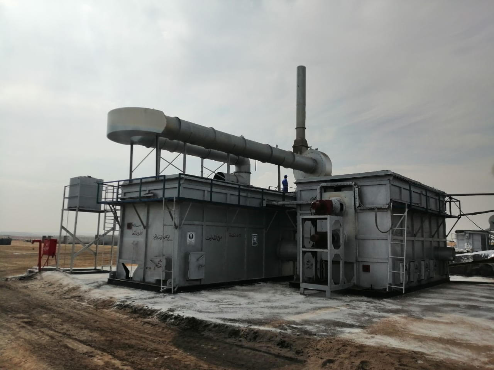

ON SITE TREATMENT
Unico will be able to treat oil base mud cutting on place at any client’s given location. Our team will install, monitor, and treat the given conditions to reach optimum results.
Benefits of specialized on site treatment:
 Reduces Cost.
Reduces Cost.- Hassle Free.
- No Transportation Hazards or Fees.
- Reduction of Hazardous Pollutants.
- Efficiency of Treatment Due to the Detailed Customization of the On-Site Treatment and Team Consistently Monitoring and Improving Specific Conditions.

Location: On Site at Client’s Location,
Abu Rudeis, on site treatment at Petrobel in Sinai
Abu Rudeis, on site treatment at Petrobel in Sinai